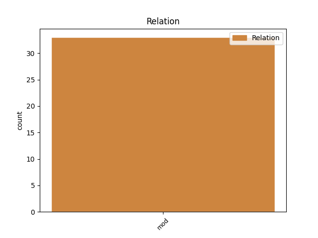
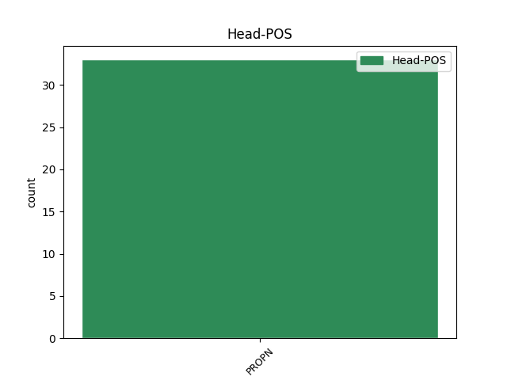
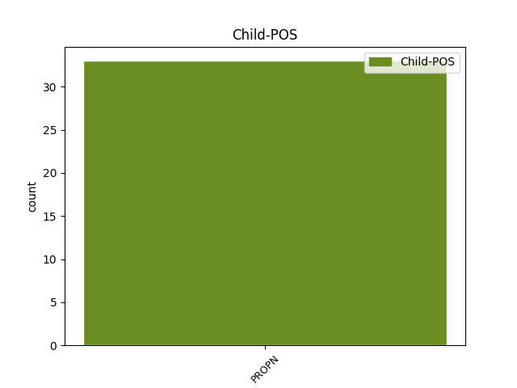

Distribution of features within this leaf



Agreement Rules sorted by frequency.
- When the dependent token is the modifer(mod) of the head token, and the head token is PROPN and the dependent token is PROPN.
1 Faktiski _ _ _ _ 0 _ _ _
2 jau _ _ _ _ 0 _ _ _
3 šajā _ _ _ _ 0 _ _ _
4 laikā _ _ _ _ 0 _ _ _
5 atspoguļojās _ _ _ _ 0 _ _ _
6 tas _ _ _ _ 0 _ _ _
7 , _ _ _ _ 0 _ _ _
8 ka _ _ _ _ 0 _ _ _
9 Baltijas Baltija PROPN npfsg4 Case=Gen|Gender=Fem|Number=Sing 10 mod _ LvtbNodeId=a-z21-p1s9w9
10 Antantes Antante PROPN npfsg5 Case=Gen|Gender=Fem|Number=Sing 0 _ _ _
11 izveidošana _ _ _ _ 0 _ _ _
12 maz _ _ _ _ 0 _ _ _
13 ietekmējusi _ _ _ _ 0 _ _ _
14 tās _ _ _ _ 0 _ _ _
15 dalībvalstu _ _ _ _ 0 _ _ _
16 atšķirīgās _ _ _ _ 0 _ _ _
17 ārpolitiskās _ _ _ _ 0 _ _ _
18 koncepcijas _ _ _ _ 0 _ _ _
19 , _ _ _ _ 0 _ _ _
20 kas _ _ _ _ 0 _ _ _
21 vēlāk _ _ _ _ 0 _ _ _
22 tikai _ _ _ _ 0 _ _ _
23 nostiprinājās _ _ _ _ 0 _ _ _
24 . _ _ _ _ 0 _ _ _
Disagree Examples:
1 Tikai _ _ _ _ 0 _ _ _
2 Z. _ _ _ _ 0 _ _ _
3 Caunes _ _ _ _ 0 _ _ _
4 advokāts _ _ _ _ 0 _ _ _
5 Aivo _ _ _ _ 0 _ _ _
6 Leimanis _ _ _ _ 0 _ _ _
7 , _ _ _ _ 0 _ _ _
8 kas _ _ _ _ 0 _ _ _
9 pirms _ _ _ _ 0 _ _ _
10 dažiem _ _ _ _ 0 _ _ _
11 gadiem _ _ _ _ 0 _ _ _
12 izpelnījās _ _ _ _ 0 _ _ _
13 mediju _ _ _ _ 0 _ _ _
14 uzmanību _ _ _ _ 0 _ _ _
15 ar _ _ _ _ 0 _ _ _
16 to _ _ _ _ 0 _ _ _
17 , _ _ _ _ 0 _ _ _
18 ka _ _ _ _ 0 _ _ _
19 Rīgas Rīga PROPN npfsg4 Case=Gen|Gender=Fem|Number=Sing 20 mod _ LvtbNodeId=a-p10570-p3s3w19
20 Centrālcietumā Centrālcietums PROPN npmsl1 Case=Loc|Gender=Masc|Number=Sing 0 _ _ _
21 « _ _ _ _ 0 _ _ _
22 aizmāršīgi _ _ _ _ 0 _ _ _
23 » _ _ _ _ 0 _ _ _
24 ienesa _ _ _ _ 0 _ _ _
25 mobilo _ _ _ _ 0 _ _ _
26 telefonu _ _ _ _ 0 _ _ _
27 , _ _ _ _ 0 _ _ _
28 uzskata _ _ _ _ 0 _ _ _
29 – _ _ _ _ 0 _ _ _
30 I. _ _ _ _ 0 _ _ _
31 Gromovs _ _ _ _ 0 _ _ _
32 , _ _ _ _ 0 _ _ _
33 sēžot _ _ _ _ 0 _ _ _
34 policistu _ _ _ _ 0 _ _ _
35 auto _ _ _ _ 0 _ _ _
36 , _ _ _ _ 0 _ _ _
37 varētu _ _ _ _ 0 _ _ _
38 būt _ _ _ _ 0 _ _ _
39 savu _ _ _ _ 0 _ _ _
40 degunu _ _ _ _ 0 _ _ _
41 līdz _ _ _ _ 0 _ _ _
42 asiņošanai _ _ _ _ 0 _ _ _
43 kaut _ _ _ _ 0 _ _ _
44 kā _ _ _ _ 0 _ _ _
45 saknaibījis _ _ _ _ 0 _ _ _
46 pats _ _ _ _ 0 _ _ _
47 . _ _ _ _ 0 _ _ _
1 Grupa _ _ _ _ 0 _ _ _
2 nosēdīsies _ _ _ _ 0 _ _ _
3 arī _ _ _ _ 0 _ _ _
4 Lietuvā _ _ _ _ 0 _ _ _
5 , _ _ _ _ 0 _ _ _
6 kur _ _ _ _ 0 _ _ _
7 23. _ _ _ _ 0 _ _ _
8 jūnijā _ _ _ _ 0 _ _ _
9 sniegs _ _ _ _ 0 _ _ _
10 koncertu _ _ _ _ 0 _ _ _
11 Kauņas Kauņa PROPN npfsg4 Case=Gen|Gender=Fem|Number=Sing 12 mod _ LvtbNodeId=a-p13670-p4s1w11
12 Žalgiris Žalgiris PROPN npmsn2 Case=Nom|Gender=Masc|Number=Sing 0 _ _ _
13 arēnā _ _ _ _ 0 _ _ _
14 . _ _ _ _ 0 _ _ _
1 Izrādes _ _ _ _ 0 _ _ _
2 fināls _ _ _ _ 0 _ _ _
3 , _ _ _ _ 0 _ _ _
4 kurā _ _ _ _ 0 _ _ _
5 Sanitas Sanita PROPN npfsg4 Case=Gen|Gender=Fem|Number=Sing 14 mod _ LvtbNodeId=a-p13833-p7s1w5
6 Pušpures _ _ _ _ 0 _ _ _
7 piemīlīgā _ _ _ _ 0 _ _ _
8 , _ _ _ _ 0 _ _ _
9 bet _ _ _ _ 0 _ _ _
10 uz _ _ _ _ 0 _ _ _
11 patstāvīgiem _ _ _ _ 0 _ _ _
12 spriedumiem _ _ _ _ 0 _ _ _
13 nespējīgā _ _ _ _ 0 _ _ _
14 Ismēne Ismēne PROPN npfsn5 Case=Nom|Gender=Fem|Number=Sing 0 _ _ _
15 ātri _ _ _ _ 0 _ _ _
16 paziņo _ _ _ _ 0 _ _ _
17 , _ _ _ _ 0 _ _ _
18 ka _ _ _ _ 0 _ _ _
19 ies _ _ _ _ 0 _ _ _
20 māsas _ _ _ _ 0 _ _ _
21 pēdās _ _ _ _ 0 _ _ _
22 , _ _ _ _ 0 _ _ _
23 Hemons _ _ _ _ 0 _ _ _
24 aiz _ _ _ _ 0 _ _ _
25 kadra _ _ _ _ 0 _ _ _
26 tikpat _ _ _ _ 0 _ _ _
27 steidzīgi _ _ _ _ 0 _ _ _
28 noduras _ _ _ _ 0 _ _ _
29 pie _ _ _ _ 0 _ _ _
30 Antigones _ _ _ _ 0 _ _ _
31 līķa _ _ _ _ 0 _ _ _
32 un _ _ _ _ 0 _ _ _
33 viņa _ _ _ _ 0 _ _ _
34 māte _ _ _ _ 0 _ _ _
35 Eiridīke _ _ _ _ 0 _ _ _
36 pārgriež _ _ _ _ 0 _ _ _
37 sev _ _ _ _ 0 _ _ _
38 rīkli _ _ _ _ 0 _ _ _
39 , _ _ _ _ 0 _ _ _
40 ir _ _ _ _ 0 _ _ _
41 caur _ _ _ _ 0 _ _ _
42 un _ _ _ _ 0 _ _ _
43 cauri _ _ _ _ 0 _ _ _
44 ironisks _ _ _ _ 0 _ _ _
45 . _ _ _ _ 0 _ _ _
1 Mārtiņa Mārtiņš PROPN npmsg1 Case=Gen|Gender=Masc|Number=Sing 3 mod _ LvtbNodeId=a-p13843-p10s2w1
2 Meiera _ _ _ _ 0 _ _ _
3 Aksjuša Aksjuša PROPN npfsn4 Case=Nom|Gender=Fem|Number=Sing 0 _ _ _
4 pārsvarā _ _ _ _ 0 _ _ _
5 uz _ _ _ _ 0 _ _ _
6 skatuves _ _ _ _ 0 _ _ _
7 uztipina _ _ _ _ 0 _ _ _
8 , _ _ _ _ 0 _ _ _
9 viegli _ _ _ _ 0 _ _ _
10 palēkdamās _ _ _ _ 0 _ _ _
11 , _ _ _ _ 0 _ _ _
12 un _ _ _ _ 0 _ _ _
13 sastingst _ _ _ _ 0 _ _ _
14 uz _ _ _ _ 0 _ _ _
15 pirkstgaliem _ _ _ _ 0 _ _ _
16 neveiklā _ _ _ _ 0 _ _ _
17 balerīnas _ _ _ _ 0 _ _ _
18 pozā _ _ _ _ 0 _ _ _
19 . _ _ _ _ 0 _ _ _
1 Ineses Inese PROPN npfsg5 Case=Gen|Gender=Fem|Number=Sing 3 mod _ LvtbNodeId=a-p13843-p10s3w1
2 Pudžas _ _ _ _ 0 _ _ _
3 Bulanovs Bulanovs PROPN npmsn1 Case=Nom|Gender=Masc|Number=Sing 0 _ _ _
4 staigā _ _ _ _ 0 _ _ _
5 , _ _ _ _ 0 _ _ _
6 rokas _ _ _ _ 0 _ _ _
7 kabatās _ _ _ _ 0 _ _ _
8 sabāzis _ _ _ _ 0 _ _ _
9 , _ _ _ _ 0 _ _ _
10 un _ _ _ _ 0 _ _ _
11 sēž _ _ _ _ 0 _ _ _
12 ieplestām _ _ _ _ 0 _ _ _
13 kājām _ _ _ _ 0 _ _ _
14 , _ _ _ _ 0 _ _ _
15 it _ _ _ _ 0 _ _ _
16 kā _ _ _ _ 0 _ _ _
17 censtos _ _ _ _ 0 _ _ _
18 pievērst _ _ _ _ 0 _ _ _
19 uzmanību _ _ _ _ 0 _ _ _
20 savai _ _ _ _ 0 _ _ _
21 kājstarpei _ _ _ _ 0 _ _ _
22 jeb _ _ _ _ 0 _ _ _
23 būtībā _ _ _ _ 0 _ _ _
24 taču _ _ _ _ 0 _ _ _
25 neesošajai _ _ _ _ 0 _ _ _
26 ( _ _ _ _ 0 _ _ _
27 tikai _ _ _ _ 0 _ _ _
28 spēlētajai _ _ _ _ 0 _ _ _
29 ) _ _ _ _ 0 _ _ _
30 vīrietībai _ _ _ _ 0 _ _ _
31 . _ _ _ _ 0 _ _ _